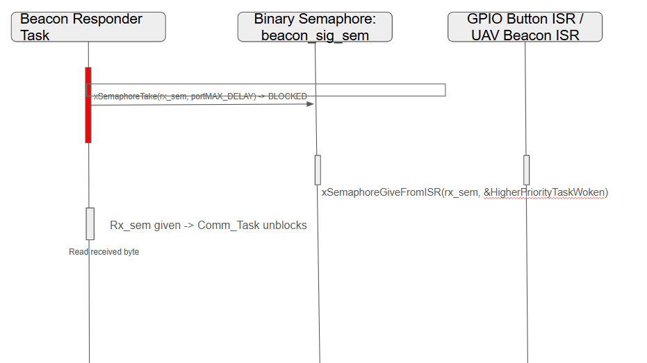
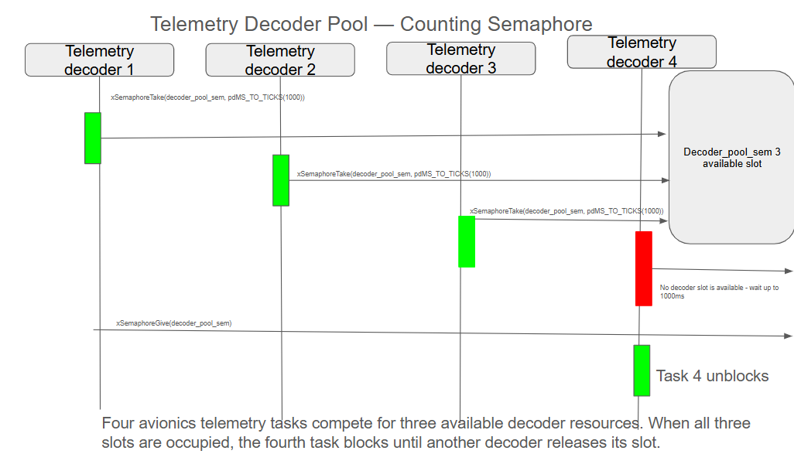
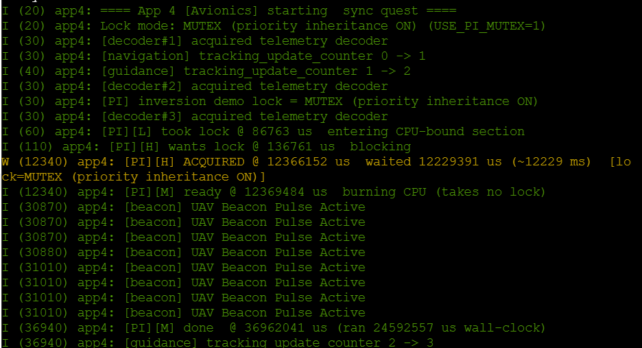

Project Overview
This avionics-themed system uses a binary semaphore to transfer a simulated UAV beacon event from an interrupt to a responder task, a counting semaphore to control access to three telemetry decoder resources, and a mutex to protect shared navigation and guidance tracking data.
The system also demonstrates priority inversion using high-, medium-, and low-priority tasks. With priority inheritance enabled, the high-priority task waited approximately 12.229 seconds. With priority inheritance disabled, it waited approximately 37.211 seconds.
Demo Video
The demonstration video will be embedded here after it is uploaded.
Binary Semaphore
A pushbutton simulates a UAV beacon pulse. The GPIO interrupt gives a binary semaphore, which wakes the beacon responder task and keeps the extended processing outside of the interrupt.

Counting Semaphore
Four telemetry tasks compete for three available decoder resources. The counting semaphore allows three tasks to use the decoder pool simultaneously while the fourth task waits for a slot.

Task Table
| Task | Avionics Role | Priority | Synchronization |
|---|---|---|---|
| Beacon responder | Responds to UAV beacon interrupt | 12 | Binary semaphore |
| Telemetry decoder 1–4 | Processes simulated telemetry | 5 | Counting semaphore |
| Navigation writer | Updates shared tracking data | 8 | Mutex |
| Guidance writer | Updates shared tracking data | 8 | Mutex |
| High-priority task H | Time-critical avionics task | 15 | Priority-inversion lock |
| Medium-priority task M | CPU-intensive background task | 10 | No lock |
| Low-priority task L | Shared-resource owner | 5 | Priority-inversion lock |
Priority-Inversion Results
| Configuration | H Wait Time |
|---|---|
| Mutex with priority inheritance | 12.229 seconds |
| Binary semaphore without priority inheritance | 37.211 seconds |
Without priority inheritance, the medium-priority task preempted the low-priority task while it still owned the resource required by H. This caused H to wait approximately three times longer.
Priority Inheritance Enabled

Priority Inheritance Disabled

Hazard Analysis
The main hazards in this system are priority inversion, corrupted shared tracking data, unavailable telemetry decoder resources, and excessive interrupt processing. Priority inversion is reduced by using a priority-inheritance mutex, shared tracking data is protected with a mutex, decoder access is limited by the counting semaphore, and the ISR remains short by using a binary semaphore to wake the responder task instead of completing extended processing inside the interrupt.
Documentation
The engineering analysis, H/M/L timelines, timing evidence, and induced-failure explanation are available in the full project README.
View Full README